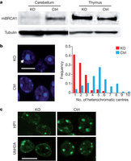
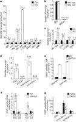
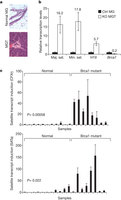
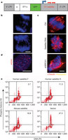

Nature | Article
BRCA1 tumour suppression occurs via heterochromatin-mediated silencing
- Quan Zhu,1, 3
- Gerald M. Pao,1, 3
- Alexis M. Huynh,1, 4
- Hoonkyo Suh,1, 4
- Nina Tonnu,1
- Petra M. Nederlof,2
- Fred H. Gage1
- & Inder M. Verma1
- Journal name:
- Nature
- Volume:
- 477,
- Pages:
- 179–184
- Date published:
- (08 September 2011)
- DOI:
- doi:10.1038/nature10371
- Received
- Accepted
- Published online
Abstract
Mutations in the tumour suppressor gene BRCA1 lead to breast and/or ovarian cancer. Here we show that loss of Brca1 in mice results in transcriptional de-repression of the tandemly repeated satellite DNA. Brca1 deficiency is accompanied by a reduction of condensed DNA regions in the genome and loss of ubiquitylation of histone H2A at satellite repeats. BRCA1 binds to satellite DNA regions and ubiquitylates H2A in vivo. Ectopic expression of H2A fused to ubiquitin reverses the effects of BRCA1 loss, indicating that BRCA1 maintains heterochromatin structure via ubiquitylation of histone H2A. Satellite DNA de-repression was also observed in mouse and human BRCA1-deficient breast cancers. Ectopic expression of satellite DNA can phenocopy BRCA1 loss in centrosome amplification, cell-cycle checkpoint defects, DNA damage and genomic instability. We propose that the role of BRCA1 in maintaining global heterochromatin integrity accounts for many of its tumour suppressor functions.
Subject terms:
Figures at a glance
-
Figure 1: Brca1 deficiency impairs heterochromatin structure. a, Expression of BRCA1 is diminished in the nestin-Cre Brca1 knockout brains as shown by immunoblotting. KO, samples from a P7 Brca1 knockout (Brca11+/−;Brca5-13cK+/−;nestin-cre+) mouse; Ctrl, samples from a control P7 (Brca11+/−;Brca5-13cK+/−; nestin-cre−) mouse. Top panel, BRCA1 immunoblot; lower panel, tubulin loading control. b, Lack of BRCA1 induces changes in the nuclear morphology of P7 knockout cortical cells. The numbers of strong DAPI staining nuclear foci per cell were counted and their frequencies plotted (right panel). c, Confocal microscopic images of brain sections from Brca1 conditional knockout and control mice (P7) stained with antibodies against HP1 and ubiquitin–H2A (UbH2A).
-
Figure 2: BRCA1 and its ubiquitin E3 ligase activity are required for gene silencing in constitutive heterochromatin. a, Quantitative RT–PCR showing that heterochromatic regions or certain imprinted genes (Igf2 and H19 but not Igf2r) are upregulated in Brca1 knockout brains. Internal controls: cyclophilin or 18S RNA. Fold induction (y axis) denotes transcript enrichment over control which is defined as 1. b, Rescue of the BRCA1-mediated repression in NPCs by exogenous human BRCA1 but not GFP after infection with retroviral cre-. y-axis values are defined where the levels of satellite transcripts in the absence of BRCA1 are defined as 1.0. c, Quantitative RT–PCR experiments showing that heterochromatic regions or imprinted genes are upregulated in Brca1 knockout mammary glands (6-week-old virgin). y axis indicates fold over control levels. d, The ubiquitin E3 ligase activity of BRCA1 is required for heterochromatin silencing. HCC1937 cells were reconstituted with either wild-type BRCA1 (HCCB1) or BRCA1 with a mutation in the RING domain (T37R)23. y axis indicates the fold over endogenous unmodified HCC1937 levels defined as 1.0. e, f, P7 cerebellar ChIP experiments with antibodies against mouse BRCA1 or VSVG protein as a control (e) and ubiquityl-histone H2A or histone H3 protein as a control (f). Enrichment of major (Maj. sat.) and minor (Min. sat.) satellite DNA was measured by quantitative PCR relative to 18S control. y axis denotes fold amplification over wild-type controls. g, ChIP experiments were performed using mono-ubiquitylated histone H2A antibody (y axis is expressed in arbitrary units) as in f and HCC1937 cells reconstituted with GFP, BRCA1 (V11A) or a mutant (T37R) (y axis units are expressed in fold enrichment over the control GFP antibody). Error bars are shown as s.d. Each result shown is representative of three independent experiments.
-
Figure 3: Ubiquitylated histone H2A is directly involved in BRCA1-mediated heterochromatic silencing. a, A diagram showing the artificial ubiquitin–H2A (H2A–Ub) expression vector. b, HCC1937 cells were infected with a lentiviral vector expressing ubiquitylated histone H2A mimic fusion protein or GFP as a control and the transcription levels of alpha satellite variants (mcBox, SATa and SATIII) were measured by qRT–PCR. y axis denotes satellite RNA levels where 1.0 is the endogenous level of the BRCA1-deficient HCC1937 cell line. c, Ectopic expression of H2A–Ub re-established heterochromatin silencing in Brca1 null NPCs. NPCs were infected with GFP alone, H2A–Ub, cre-GFP alone and cre-GFP co-infected with H2A–Ub. The levels of satellite DNA transcription were measured by qRT–PCR expressed in fold over endogenous background levels, which are defined as 1.0. d, NPCs showed increased proliferation upon expression of H2A–Ub in Brca1 null NPCs. Two days after infection, cells were labelled with BrdU before fixation, immunostaining and FACS analysis. The result shown is representative of three independent experiments. y axis denotes cell numbers. sip53, a lentivirus expressing shRNA targeting tumour suppressor p53. e, NPCs show reduced apoptosis upon expression of H2A–Ub in Brca1 null NPCs. NPCs were cultured and infected as in d. Cells were fixed, immunostained with anti-activated caspase 3 antibody and subjected to confocal imaging. Error bars are shown as s.d. Scale bar: 100 μm.
-
Figure 4: De-repression of satellite DNA transcription occurs in Brca1-deficient breast cancers. a, Haematoxylin/eosin staining of Brca1 knockout mouse breast cancer. Because Brca1 knockout female mice develop mammary tumours very rarely, these mice were crossed into a p53 heterozygous background for accelerated tumorigenesis. MG, mammary gland from normal mouse littermates; MGT, mammary tumours from Brca1 knockout mouse (Brca11+/−;Brca5-13cK+/−;MMTV-cre+;p53+/−) developed at 6 months. b, Quantitative RT–PCR experiments showing that heterochromatic regions and imprinted genes are upregulated in mouse Brca1 knockout breast cancer in comparison to that of wild-type mammary glands from littermates (internal control 18S RNA). The result shown is an aggregate of five mouse independent sample pairs. c, Quantitative RT–PCR experiments showing that the satellite DNA transcripts CFXr and SATa are significantly de-repressed (Student’s 2-tailed t-test) in human BRCA1 mutant breast tumours (n = 8) in comparison with that of normal breast tissues (n = 11). Ct values of each sample were normalized with GAPDH. Error bars indicate s.d.
-
Figure 5: Ectopic expression of satellite DNA transcripts leads to genomic instability in human mammary epithelial cells. a, A diagram of the lentiviral vector expressing the human or mouse satellite DNA sequence (red arrows) under the control of the H1 promoter (blue arrow). b–d, Overexpression of satellite RNA induced mitotic catastrophe (b), centrosome amplification (c) and histone γH2AX phosphorylation (d) in primary HMECs. e, Defective mitotic checkpoints induced by satellite DNA overexpression. Forty-eight hours after transduction of a lentivirus expressing human satellite DNA sequence with forward direction (Human satellite F), with reverse direction (Human satellite R), mouse satellite DNA sequence, or an empty vector, U2OS cells were blocked with thymidine, followed by treatment with nocodazole. The cells were stained with phosho-histone H3 antibody and propidium iodide (PI) before flow cytometric analysis. The experiment shown is representative of three independent replicates.
Introduction
Breast cancer susceptibility gene 1 (BRCA1) was identified as a hereditary cancer susceptibility gene that increased1 the risk for the development of breast and ovarian cancer in BRCA1 mutation carriers to as high as 95% by age 70 (ref. 2). The BRCA1 protein contains a RING finger domain in the amino terminus with ubiquitin E3 ligase activity and two BRCT repeats in the carboxy terminus3. BRCA1 is highly expressed in proliferative cells and its loss leads most prominently to genetic instability and growth arrest. These observations have implicated BRCA1 in a multitude of disparate cellular functions, including DNA damage repair, cell-cycle checkpoint activation, transcriptional regulation, DNA replication, centrosome function and X-chromosome inactivation, among others4. Presently no unifying mechanistic framework exists to tie the reported biochemical activities of BRCA1 to its tumour suppressor function3.
Heterochromatic centres in Brca1 knockout cells
High levels of BRCA1 expression have been found in the embryonic neuroectoderm5, the postnatal cerebellum6 and the subgranular zone of the dentate gyrus in the adult brain, which are the sites of embryonal and adult neurogenesis, respectively. We initially set out to study the contribution of Brca1 to neural stem cell (NSC) proliferation through the targeted deletion of Brca1 in nestin-expressing NSCs (Supplementary Fig. 1a). As expected, the levels of Brca1 protein and RNA are significantly reduced in the brains of Brca1 knockout mice (Fig. 1a and Supplementary Fig. 1b). To characterize the mutant brains, we performed microarray analyses and found evidence of altered epigenetic regulation in the absence of Brca1 as some imprinted genes are deregulated (Supplementary Table 1). Most notably, upregulation of both Igf2 and H19 expression has been verified by quantitative reverse transcription polymerase chain reaction (qRT–PCR) experiments using cortical RNA samples (Fig. 2a).
a, Expression of BRCA1 is diminished in the nestin-Cre Brca1 knockout brains as shown by immunoblotting. KO, samples from a P7 Brca1 knockout (Brca11+/−;Brca5-13cK+/−;nestin-cre+) mouse; Ctrl, samples from a control P7 (Brca11+/−;Brca5-13cK+/−; nestin-cre−) mouse. Top panel, BRCA1 immunoblot; lower panel, tubulin loading control. b, Lack of BRCA1 induces changes in the nuclear morphology of P7 knockout cortical cells. The numbers of strong DAPI staining nuclear foci per cell were counted and their frequencies plotted (right panel). c, Confocal microscopic images of brain sections from Brca1 conditional knockout and control mice (P7) stained with antibodies against HP1 and ubiquitin–H2A (UbH2A).
a, Quantitative RT–PCR showing that heterochromatic regions or certain imprinted genes (Igf2 and H19 but not Igf2r) are upregulated in Brca1 knockout brains. Internal controls: cyclophilin or 18S RNA. Fold induction (y axis) denotes transcript enrichment over control which is defined as 1. b, Rescue of the BRCA1-mediated repression in NPCs by exogenous human BRCA1 but not GFP after infection with retroviral cre-. y-axis values are defined where the levels of satellite transcripts in the absence of BRCA1 are defined as 1.0. c, Quantitative RT–PCR experiments showing that heterochromatic regions or imprinted genes are upregulated in Brca1 knockout mammary glands (6-week-old virgin). y axis indicates fold over control levels. d, The ubiquitin E3 ligase activity of BRCA1 is required for heterochromatin silencing. HCC1937 cells were reconstituted with either wild-type BRCA1 (HCCB1) or BRCA1 with a mutation in the RING domain (T37R)23. y axis indicates the fold over endogenous unmodified HCC1937 levels defined as 1.0. e, f, P7 cerebellar ChIP experiments with antibodies against mouse BRCA1 or VSVG protein as a control (e) and ubiquityl-histone H2A or histone H3 protein as a control (f). Enrichment of major (Maj. sat.) and minor (Min. sat.) satellite DNA was measured by quantitative PCR relative to 18S control. y axis denotes fold amplification over wild-type controls. g, ChIP experiments were performed using mono-ubiquitylated histone H2A antibody (y axis is expressed in arbitrary units) as in f and HCC1937 cells reconstituted with GFP, BRCA1 (V11A) or a mutant (T37R) (y axis units are expressed in fold enrichment over the control GFP antibody). Error bars are shown as s.d. Each result shown is representative of three independent experiments.
Heterochromatic centres are highly condensed regions of heterochromatin with repetitive tandem DNA that can be visualized by 4′,6-diamidino-2-phenylindole (DAPI) staining. In neurons these centres are particularly prominent. We analysed the nuclei of the mutant brains by DAPI staining and found a marked reduction in the number of heterochromatic foci in cells, especially in the perinuclear region, when compared to control cortices (4.88 foci per cell to 1.99 foci per cell) (Student’s t-test, P < 0.0005) (Fig. 1b). Moreover, the size of the heterochromatic foci appeared to be larger and more diffuse in mutant brains. These observations indicate a defective heterochromatic structure in Brca1-deficient cells. To study the nature of this defect, we stained the nuclei of cortical cells for heterochromatin protein 1 (HP1)7, a bona fide pericentric heterochromatin-associated protein, and found that HP1 localized to heterochromatic centres. The number of HP1-positive foci in mutant cortices was decreased from 2.86 foci per cell to 2.13 foci per cell (Student’s t-test, P < 0.0005) (Fig. 1c, top row and Supplementary Fig. 1c, left panel). Moreover, immunoblotting of cerebellar samples showed that the protein levels of all three HP1 protein isoforms (HP1α, HP1β and HP1γ) were severely reduced in knockout mice compared to controls (Supplementary Fig. 1d). The repressive histone H1 also displayed aberrant staining and was more diffuse in Brca1 mutant cortices (Supplementary Fig. 2a). Other previously characterized repressive histones, such as macro H2A1, and heterochromatin markers, such as histone H3 dimethyl Lys 9, did not appear to be affected by Brca1 knockout (Supplementary Fig. 2b). Because we have previously shown that the BRCA1 protein preferentially monoubiquitylates histone H2A in vitro through its N-terminal RING finger8, we investigated whether BRCA1 is involved in heterochromatin formation through histone H2A ubiquitylation. We found that the staining of monoubiquitylated histone H2A, which has recently been implicated in polycomb-mediated silencing9, corresponded to the heterochromatic centres described in Fig. 1b and that the staining signal was reduced in Brca1 mutant brains (Fig. 1c, bottom row and Supplementary Fig. 1c, right panel). We verified the cell-autonomous nature of our observations using cultured embryonic neural progenitor cells (NPCs) in vitro. Ten days after neuronal differentiation, the Brca1-deficient cells displayed a significant reduction in the number of heterochromatic centres (7.85 foci per cell versus 5.00 foci per cell, Student’s t-test, P < 0.0005) (Supplementary Fig. 2c). Taken together, these data strongly suggest that cells lacking BRCA1 are impaired in the organization of heterochromatin structure.
Heterochromatic silencing disruption
To ascertain that the observed heterochromatic structural deficiencies are of functional importance, we investigated the transcriptional status of known silenced genes. Defects are expected to result in de-repression of normally silenced genes in heterochromatic regions10. The murine pericentric heterochromatin consists of stretches of highly repetitive DNA elements, including the major and minor satellite repeats, which make up ~3% and ~0.45% of the mouse genome, respectively11. Quantitative RT–PCR experiments showed that the levels of major and minor satellite transcripts were elevated 10.2-fold and 27.3-fold, respectively, in the Brca1 mutant cortices, indicating a loss of repression in constitutive heterochromatin (Fig. 2a). Other interspersed repetitive elements such as IAP1, SINE1 and the L1 LINE element were largely unaffected. This effect was cell autonomous as it was observed in vitro in cultured embryonic NPCs (Supplementary Fig. 3a). The defects in heterochromatic repression in Brca1-deficient mouse cells could be reversed by re-expression of human BRCA1 using a lentiviral vector (Fig. 2b). Heterochromatin repression by BRCA1 is not unique to neural cells because deletion of Brca1 in fibroblasts from postnatal day 7 (P7) mouse ribcages also showed upregulation of both satellite transcripts (Supplementary Fig. 3b). Because Brca1 is a tumour suppressor in breast cancer we next generated mice harbouring a mammary-gland-specific deletion of Brca1 and analysed the integrity of heterochromatin by qRT–PCR experiments (Fig. 2c). The result demonstrated that lack of Brca1 in mammary glands from 6-week-old virgin female mice disrupted heterochromatic satellite DNA silencing as well as imprinted H19 epigenetic regulation, consistent with our findings in Brca1 null brains (Fig. 2a).
The silencing of constitutive heterochromatin by BRCA1 is also not limited to mouse cells, as satellite transcripts from human HeLa cells were upregulated upon expression of a short hairpin (sh)RNA targeting BRCA1 (Supplementary Fig. 4a). Similarly, reconstitution of the human BRCA1-deficient cell line HCC1937 with a retrovirus expressing wild-type BRCA1 repressed the expression of satellite DNA transcripts about 20-fold (Fig. 2d). To determine whether the N-terminal RING domain of BRCA1 is important for the heterochromatic silencing function, we reconstituted HCC1937 cells with either a pathogenic BRCA1 mutant devoid of ubiquitin ligase activity (T37R, known to confer increased cancer risk) or a polymorphic variant (V11A, indistinguishable from wild type). The BRCA1(T37R) mutant failed to repress satellite transcripts whereas the BRCA1(V11A) mutant repressed the satellite transcripts to an extent similar to wild-type BRCA1 (Fig. 2d). The lack of repressive activity was not due to reduced binding of BARD1, the natural heterodimeric partner of BRCA1, as both BRCA1(T37R) and BRCA1(V11A) immunoprecipitated BARD1 similarly (Supplementary Fig. 4b). To verify further the involvement of the E3-ligase activity of BRCA1, we assessed the effects of BARD1 knockdown on satellite DNA transcription, as the heterodimerization between BRCA1 and BARD1 is required for optimal E3 ligase activity8, 12. Expression of a shRNA against BARD1 elevated the satellite DNA transcription in the BRCA1-reconstituted HCC1937 cells but not in the HCC1937 cells where BRCA1 is absent and the satellite repeat transcription is already de-repressed (Supplementary Fig. 4c). These results from cultured human cells are consistent with data obtained from the Brca1-deficient mouse brains, fibroblasts and mammary glands in which satellite DNA transcript induction was observed. Moreover, it seems that the ubiquitin E3 ligase activity of BRCA1 is essential for its role in gene silencing in constitutive heterochromatin.
Relationship between BRCA1 and heterochromatin
To gain a mechanistic insight into the role of BRCA1 in maintaining heterochromatin structure, we first investigated whether BRCA1 directly associates with the constitutive heterochromatic region in vivo. Chromatin immunoprecipitation (ChIP) experiments showed that BRCA1 was enriched on major and minor satellite DNA (Fig. 2e) in mouse cells and on various alpha satellite sequences in HeLa cells (Supplementary Fig. 4d).
We next tested whether BRCA1 influenced histone ubiquitylation in vivo. The results of ChIP experiments showed that ubiquitylated histone H2A was enriched in both major and minor satellite regions when compared with a histone H3 antibody (Fig. 2f). However, this satellite region enrichment was abrogated in the absence of BRCA1, indicating that BRCA1 integrity is essential for the accumulation of ubiquityl-histone H2A at satellite repeats in vivo. Our data also show that ubiquityl-histone H2A is enriched at the satellite regions of the mouse genome to a greater extent than at other interspersed repeats such as LINE1 (data not shown), indicative of a distinct heterochromatin. If BRCA1 is indeed the ubiquitin ligase for pericentric heterochromatic histone H2A, it would imply that the integrity of the RING finger is required for the accumulation of ubiquitylated histone H2A at satellite repeats, as we have shown that the same region is critical for transcriptional silencing in heterochromatin (Fig. 2d). To test this hypothesis, ChIP experiments were performed using HCC1937 cells reconstituted with BRCA1(T37R), BRCA1(V11A), or GFP (Fig. 2g). BRCA1(T37R) failed to significantly enrich ubiquitylated histone H2A at satellite regions, in a manner similar to GFP control, whereas the polymorphic BRCA1(V11A) showed enrichment of ubiquitylated histone H2A within the same regions. A distinct mutant, BRCA1(I26A), that has been reported to not destabilize the interaction with BARD1 but has no ubiquitin ligase activity13 fails to complement the loss of BRCA1 (Supplementary Fig. 5). The ubiquitin ligase function of BRCA1 seems to be specific, as deletion of Ring1B (also called Rnf2) or knockdown of RNF8 fails to appreciably de-repress satellite transcription (Supplementary Fig. 6). These findings provide further evidence that the ubiquitin ligase activity of BRCA1 is essential for the maintenance of the ubiquityl-histone H2A mark within constitutive heterochromatic regions not only in mouse tissue but also human cells derived from breast cancers.
Ubiquitylated histone H2A rescues BRCA1
To assess the contribution of (mono)ubiquityl-histone H2A to the function of BRCA1 in heterochromatic silencing we generated a lentiviral vector construct expressing an H2A–Ub fusion protein that mimics the natural ubiquityl-histone H2A (Fig. 3a). This was accomplished by fusing a single ubiquitin moiety to the C terminus of histone H2A in lieu of the modification of lysine 119. Subnuclear fractionation of cells expressing this fusion protein shows that the H2A–Ub protein and mutants can be incorporated into cellular chromatin (Supplementary Fig. 7). BRCA1-deficient HCC1937 cells were transduced with lentivirus expressing the H2A–Ub fusion protein. Quantification of the levels of satellite DNA transcription showed that H2A–Ub expression can re-establish silencing of the satellite repeats (mcBox, SATa and SATIII) within heterochromatin in BRCA1-deficient human cells, indicating that monoubiquityl-H2A is likely to be the main target of BRCA1 ubiquitin E3 ligase that mediates silencing at constitutive heterochromatin (Fig. 3b). Ectopic expression of H2A–Ub (Supplementary Fig. 8) in murine NPCs restored the levels of satellite DNA silencing to more than 90% of endogenous wild-type silencing (Fig. 3c). Mutations within the ubiquitin domain of the fusion protein reduced the ability to restore silencing of the H2A–Ub fusion protein (Supplementary Fig. 9a). H2A–Ub expression in wild-type cells had no significant effect on the transcription of satellite DNA. To investigate whether the ubiquitylation of histone H2A affected previously well-documented BRCA1 functions, we tested if the restored satellite DNA silencing in Brca1 null cells had any of the expected consequences. It has been reported that primary Brca1 null cells display a severe growth defect and p53-activated apoptosis and that p53 inactivation largely rescues the growth defect14. By performing 5-bromodeoxyuridine (BrdU) incorporation assays, we found that ectopic expression of H2A–Ub led to a restoration of over 75% of proliferation in Brca1-deficient cells, only slightly lower than a p53 knockdown (Fig. 3d). Again, in this case expression of H2A–Ub bypassed the requirement for BRCA1. Notably, although p53 is able to rescue the proliferative defect of Brca1-deficient cells, it does not rescue the formation of heterochromatic centres, or the de-repression of satellite transcripts (Supplementary Fig. 10). We also evaluated the ability of H2A–Ub to suppress apoptosis. Staining for an apoptotic marker, active caspase 3, showed a similar result (Fig. 3e) to what was seen for BrdU incorporation or transcriptional silencing. Thus, H2A–Ub can suppress the apoptosis induced by loss of Brca1. Taken together, ectopic expression of H2A–Ub not only restored silencing but also rescued the proliferative defect and apoptosis of Brca1-deficient cells. This rescue of the proliferative capacity of H2A–Ub is specific for the ubiquitylation modification, as mutations within the ubiquitin domain can abrogate the effect (Supplementary Fig. 9b, c). Homologous recombination, another reported cellular process in which BRCA1 has been implicated, can also be rescued by ectopic H2A–Ub expression in the absence of BRCA1, whereas the same protein with a triple point mutation within the ubiquitin domain is unable to complement (Supplementary Fig. 11). Thus, monoubiquityl-H2A is probably the principal target of BRCA1 for maintaining heterochromatin integrity in vivo.
a, A diagram showing the artificial ubiquitin–H2A (H2A–Ub) expression vector. b, HCC1937 cells were infected with a lentiviral vector expressing ubiquitylated histone H2A mimic fusion protein or GFP as a control and the transcription levels of alpha satellite variants (mcBox, SATa and SATIII) were measured by qRT–PCR. y axis denotes satellite RNA levels where 1.0 is the endogenous level of the BRCA1-deficient HCC1937 cell line. c, Ectopic expression of H2A–Ub re-established heterochromatin silencing in Brca1 null NPCs. NPCs were infected with GFP alone, H2A–Ub, cre-GFP alone and cre-GFP co-infected with H2A–Ub. The levels of satellite DNA transcription were measured by qRT–PCR expressed in fold over endogenous background levels, which are defined as 1.0. d, NPCs showed increased proliferation upon expression of H2A–Ub in Brca1 null NPCs. Two days after infection, cells were labelled with BrdU before fixation, immunostaining and FACS analysis. The result shown is representative of three independent experiments. y axis denotes cell numbers. sip53, a lentivirus expressing shRNA targeting tumour suppressor p53. e, NPCs show reduced apoptosis upon expression of H2A–Ub in Brca1 null NPCs. NPCs were cultured and infected as in d. Cells were fixed, immunostained with anti-activated caspase 3 antibody and subjected to confocal imaging. Error bars are shown as s.d. Scale bar: 100 μm.
Heterochromatin and BRCA1 tumour suppression
We next investigated the significance of heterochromatin function in BRCA1-mediated tumour suppression. Mouse breast tumours (Fig. 4a) were harvested from animals where BRCA1 was deleted in the mammary gland (also shown in Fig. 2c). Analyses by qRT–PCR showed disrupted satellite DNA silencing in Brca1-deficient mouse mammary tumours, but not in tissues where Brca1 is intact (Fig. 4b). Furthermore, we analysed satellite transcripts in human breast tumours derived from eight individual BRCA1 mutation carriers and found significant de-repression of the expression of alpha satellite repeats: CFXr and SATa (two of human alpha satellite DNA sequences; Fig. 4c). The differences are apparent, even without normalizing for any other factors (for example, the percentage of non-tumour cell contamination), in comparison with a cohort of normal breast biopsies.
a, Haematoxylin/eosin staining of Brca1 knockout mouse breast cancer. Because Brca1 knockout female mice develop mammary tumours very rarely, these mice were crossed into a p53 heterozygous background for accelerated tumorigenesis. MG, mammary gland from normal mouse littermates; MGT, mammary tumours from Brca1 knockout mouse (Brca11+/−;Brca5-13cK+/−;MMTV-cre+;p53+/−) developed at 6 months. b, Quantitative RT–PCR experiments showing that heterochromatic regions and imprinted genes are upregulated in mouse Brca1 knockout breast cancer in comparison to that of wild-type mammary glands from littermates (internal control 18S RNA). The result shown is an aggregate of five mouse independent sample pairs. c, Quantitative RT–PCR experiments showing that the satellite DNA transcripts CFXr and SATa are significantly de-repressed (Student’s 2-tailed t-test) in human BRCA1 mutant breast tumours (n = 8) in comparison with that of normal breast tissues (n = 11). Ct values of each sample were normalized with GAPDH. Error bars indicate s.d.
Satellite-transcript-induced genomic instability
To investigate whether the observed satellite DNA de-repression in mouse and human breast cancers is either an epiphenomenon or of aetiological significance for the genesis of cancer, we ectopically expressed satellite RNA from a transduced lentiviral vector (Fig. 5a) in cultured primary human mammary epithelial cells (HMECs). These cells increased abnormal mitotic figures, including bridged and lagging chromosomes and disorganized metaphases shown by DAPI staining (Fig. 5b and Supplementary Fig. 12). Immunofluorescence staining of pericentrin and tubulin revealed amplified centrosomes, as previously described in BRCA1 (ref. 15) null cells (Fig. 5c). Cells overexpressing satellite RNA also displayed numerous foci of γH2AX (Fig. 5d), a well-established marker of DNA double-strand breaks. This mirrors the phenotype of BRCA1-deficient cells. Flow cytometric analyses showed an impaired mitotic spindle checkpoint when cells overexpressing satellite RNA were treated with nocodazole (Fig. 5e), which has also been reported as a BRCA1 loss phenotype15. Just as expected, ectopic expression of satellite RNA was able to recreate a deficiency in homologous recombination similar in magnitude to the knockdown of BRCA1 (Supplementary Fig. 13). Notably, the cellular defects associated with satellite RNA overexpression are generally considered to be leading causes of genomic instability.
a, A diagram of the lentiviral vector expressing the human or mouse satellite DNA sequence (red arrows) under the control of the H1 promoter (blue arrow). b–d, Overexpression of satellite RNA induced mitotic catastrophe (b), centrosome amplification (c) and histone γH2AX phosphorylation (d) in primary HMECs. e, Defective mitotic checkpoints induced by satellite DNA overexpression. Forty-eight hours after transduction of a lentivirus expressing human satellite DNA sequence with forward direction (Human satellite F), with reverse direction (Human satellite R), mouse satellite DNA sequence, or an empty vector, U2OS cells were blocked with thymidine, followed by treatment with nocodazole. The cells were stained with phosho-histone H3 antibody and propidium iodide (PI) before flow cytometric analysis. The experiment shown is representative of three independent replicates.
Discussion
Our study shows that BRCA1 deficiency impairs the integrity of constitutive heterochromatin which leads to the disruption of gene silencing at the tandemly repeated DNA regions, probably through the loss of ubiquitylation of histone H2A. BRCA1 and BARD1 preferentially monoubiquitylate H2A at high stoichiometry8, which comprises 5–15% of the total cellular nucleosomal histone H2A16. BRCA1 accumulates monoubiquitylated histone H2A at satellite DNA regions, which encompass ~3.45% of the mouse genome11 (Fig. 2f), and is itself localized there, as indicated by ChIP experiments (Fig. 2e). The BRCA1 RING domain is essential for both satellite DNA binding and silencing. BARD1 is also required for repression of satellite repeats, and loss of BARD1 is of no consequence if BRCA1 is already absent (Supplementary Fig. 4c). Although the exact function is not well understood, the emerging notion is that monoubiquitylated histone H2A is most frequently associated with transcriptionally repressive states9, 17, 18. Other ubiquitin ligases—RING1A/B, of the polycomb repressive complex 1 (PRC1), and RNF8, a DNA repair ligase19, 20—ubiquitylate H2A but do not contribute to the silencing of satellite repeats (Supplementary Fig. 6). Similarly, BAP1, a known BRCA1 binding protein, has been shown to antagonize the polycomb complex by de-ubiquitylating histone H2A21, 22. Because a mimic of natural ubiquityl-H2A can rescue the most prominent BRCA1-deficiency defects, it suggests that ubiquitylation of histone H2A is probably the primary substrate of BRCA1 (Fig. 3 and Supplementary Fig. 9).
It is worth noting that overexpression of the satellite transcripts in the presence of wild-type BRCA1 partially phenocopies BRCA1 loss (Fig. 5), including centrosome amplification and γH2AX foci formation. These observations indicate that constitutive heterochromatin formation prevents DNA damage or a DNA damage response. The function of satellite transcripts is largely unknown. However, it has been known that the integrity of centromeric heterochromatin requires an unknown RNA component7 that could conceivably be satellite transcripts.
Tumour suppression by BRCA1 was presumed to occur via homologous recombination3. Recent work showed that cells expressing a mutant BRCA1 devoid of E3 ligase activity do not exhibit defects in homologous recombination13. Thus, the defect in genomic instability in BRCA1 null cells seems not to require this function, although an intact RING domain is required for recovery from γ-irradiation23. Nevertheless, mutations that compromise the ubiquitin ligase activity of BRCA1 are cancer predisposing and constitute hotspots of mutational occurrences in patients23. Our work shows that satellite DNA repression indeed requires an intact BRCA1 RING domain, consistent with satellite DNA de-repression observed in BRCA1 tumours (Fig. 2d). Indeed, satellite transcripts in clinical BRCA1 patient tumours are upregulated (Fig. 4c). Since satellite transcripts when expressed ectopically can induce centrosome amplification, cell-cycle checkpoint defect and the DNA damage response, it fulfils the criteria to be a main effector of BRCA1-mediated tumorigenesis. Although it is presently unclear how these processes are elicited at a mechanistic level, it is tempting to speculate that histone H2A ubiquitylation pathways are involved. Alternatively, the de-repression of satellite DNA might be elicited by some indirect ‘global effect’ in trans that would not require monoubiquitylated histone H2A to be at the de-repressed site. It is conceivable that induction of satellite transcripts could be developed into a marker of loss of heterozygosity for clinical diagnostic application. Recent work has shown that a variety of epithelial cancers overexpress satellite repeats that encompass up to 50% of cellular transcripts24. Although the pathological significance of this finding is unknown, our work suggests that these satellite transcripts could contribute to the evolution of the cancer cell through the induction of genomic instability (Supplementary Fig. 14).
Methods
Immunohistochemical analysis
Immunohistochemical staining was performed as previously described28. Primary antibodies included: goat anti-mouse BRCA1 (1:50, Santa Cruz), goat anti-HP1 (1:100, Santa Cruz), mouse anti-HP1α (1:200, Millipore), rat anti-HP1β (1:50, AbD Serotec), mouse anti-HP1γ (1:200, Millipore), mouse anti-ubiquitin H2A (1:200, Upstate), rabbit-anti-dimethyl-histone H3 (Lys 9) (1:100, Upstate), rabbit anti-macro H2A (1:100, Upstate), sheep anti-histone H1 (1:200,Upstate). The mouse tumour tissue histology was performed at the Histology core facility of the Moores Cancer Center of the University of California at San Diego.
Western blotting analysis
Western blotting was performed using 3–8% Tris-acetate or 12% Bis-Tris precast Novex gels (Invitrogen) and XCell Blot Modules (Invitrogen) according to the manufacturer’s protocol. The blots were analysed with the LI-COR Odyssey Infrared Imaging System.
Microarray analysis
Brain total RNA was prepared using Trizol reagent (Invitrogen) and processed and hybridized with Affymetrix GeneChip Mouse Genome 430 2.0 Arrays by the Affymetrix Core Facility at the Salk Institute. The gene expression profile was analysed using the Bullfrog software package. Microarray data have been deposited in the GEO database under the accession number GSE6310 (brain BRCA1 conditional knockout).
Cell culture and virus infection
Primary neural progenitor cells were isolated from adult mice containing one Brca1 null allele and one floxed Brca1 allele as described25. The cells were cultured in DMEM/F12 (1:1) medium with N2 supplement (Invitrogen), 20 ng ml−1 of human fibroblast growth factor 2 (Peprotech), and 20 ng ml−1 human epidermal growth factor (Peprotech). Embryonic neural progenitors were isolated and cultured as described26. Cultured cells were infected with retroviruses with an MOI of 5 for 12 h and harvested at the time indicated in corresponding figure legends. HCC1937 cells were cultured as described23. Reconstitution experiments were performed on passage 2 embryonic neural progenitor cells and infected with either retrovirus expressing cre-GFP (pCL-CAG-CRE-GFP) or GFP (pCL-CAG-GFP) alone. In some experiments an improved lentiviral self-deleting Cre expression vector was used instead (pBOB-CAG-iCRE-SD). Lentiviral human BRCA1 expressed under the CAG promoter (pBOB-CAG-BRCA1) or the control GFP (pBOB-CAG-GFP) was co-infected with the retroviral constructs. Approximately 72 h after infection, cells were harvested with Trizol for RNA extraction. Fibroblasts were isolated from P7 mouse ribcages by digestion with 2 mg ml−1 of pronase (Roche Biochem) for 30 min at 37 °C followed by a 90 min digestion with 3 mg ml−1 of collagenase D (Roche Biochem) in DMEM. Cells were cultured in DMEM 15% FCS with antibiotic/antimycotic and infected with retrovirus as with neural progenitor cells. Cells were left at confluency for 1 week before RNA extraction by Trizol. The ubiquitylated histone mimics were expressed from lentiviral constructs (pBOB-CAG-fHis-H2A-Ub) and the satellite RNAs from a lentiviral construct (p156RRL-EF1a-GFP-U3H1MajSat ) for mouse major satellite or p156RRL-EF1a-GFP-U3H1SatA for human alpha satellite.
Quantitative RT–PCR
Reverse transcription was carried out using SuperScript III First-strand Synthesis System (Invitrogen). The quantification of PCR products was analysed with SYBR green using ABI PRISM 7700 Sequence Detection system software (Applied Biosystems).
Tissue preparation
Animals were anaesthetized with ketamine/xylazine and perfused transcardially with 0.9% saline followed by 4% paraformaldehyde in 0.1 M phosphate buffer before brains were dissected out and sectioned either coronally or sagittally on a sliding microtome (40 μm) or on a cryostat (20 μm). All animal experiments were performed in the AAALAC certified Salk animal facilities in compliance with an Institutional Animal Care and Use Committee (IACUC) approved protocol to ensure animal welfare.
ChIP experiments
Brains were harvested into DMEM and mechanically minced by pipetting before fixation in DMEM with 1% formaldehyde, 20 mM HEPES pH 7.6, 0.1 M NaCl, 1 mM EDTA, 0.5 mM EGTA at room temperature with rotation. The crosslinking reaction was stopped after 20–25 min by addition of glycine to a final concentration of 0.125 M. Dispersed tissue was subsequently washed with PBS without calcium or magnesium and with 2× complete protease inhibitor cocktail (Roche) followed by a permeabilization wash 20 mM HEPES, 0.25% Triton X-100, 10 mM EDTA, 0.5 mM EGTA, complete protease inhibitor (Roche) and a high salt wash 20 mM HEPES 0.15 M NaCl, 1 mM EDTA, 0.5 mM and complete protease inhibitor. All subsequently used solutions contained 1× complete protease inhibitor tablets (Roche). Cells were then re-suspended in ChIP buffer (10 μM Tris HCl pH 8.0, 0.15% SDS, 1% Triton X-100, 150 mM NaCl, 1 mM EDTA pH 8.0, 0.5 mM EGTA pH 8.0) and sonicated using a cooled Diagenode Bioruptor bath sonicator for 30 min with 1-min pulses and 2-min pauses. Chromatin was then spun at 4 °C for 5 min at 14,000g. The supernatant was then incubated for 2 h with 20 μl ml−1 of salmon sperm DNA blocked Protein G beads (Upstate biotechnology) before use for ChIP. Chromatin was diluted into a final 1× ChIP buffer with 0.5% BSA and 2–5 μg antibody per 1.0–1.5 ml and incubated overnight at 4 °C. Subsequently 20 μl of salmon sperm DNA blocked Protein G beads (Upstate Biotechnology) were added for 2–3 h followed by six washes as follows: 2× 0.1% SDS, 0.1% DOC, 1% Triton X-100, 150 mM NaCl, 1 mM EDTA pH 8.0, 0.5 mM EGTA pH 8.0, 20 mM TrisHCl pH 8.0, 1× 0.1% SDS, 0.1% DOC, 1% Triton X-100, 500 mM NaCl, 1 mM EDTA pH 8.0, 0.5 mM EGTA pH 8.0, 20 mM TrisHCl pH 8.0, 1× 0.25 M LiCl, 0.5% DOC, 0.5% NP-40, 1 mM EDTA pH 8.0, 0.5 mM EGTA pH 8.0, 20 mM TrisHCl pH 8.0, 2× 1 mM EDTA pH 8.0, 0.5 mM EGTA pH 8.0, 20 mM HEPES pH 8.0. Immune complexes were eluted by 30 min incubation of beads at room temperature in 100 μl of 1% SDS and 0.1 M NaHCO3. Eluted samples were then either analysed by qPCR or diluted to 1× ChIP buffer to re-precipitate, repeating the above procedure except for eluting in 400 μl. Samples are then brought to 200 mM NaCl and incubated at 65 °C for 5 h to reverse crosslinks. DNA is then extracted by phenol chloroform extraction and EtOH precipitation with Glycoblue (Invitrogen) glycogen as a carrier. DNA is then re-suspended into 20 μl of 10 mM Tris HCl pH 8.0 and analysed by qPCR. With HeLa cells, 15 × 15 cm dishes of confluent HeLa cells were used per experiment. Antibodies used are as follows: anti-mouse BRCA1 (M-20) (Santa Cruz Biotechnology), anti-human BRCA1 (Ab-1) (Calbiochem), anti-HP1α, clone15.19s2 (Upstate Biotechnology), anti-HP1γ, clone 42s2 (Upstate Biotechnology), anti-histone H3 06-755, anti-ubiquityl-histone H2A, clone E6C5 (Upstate Biotechnology), anti-dimethyl-histone H3 (Lys9) 07-441, anti-histone H2A (acidic patch) (Upstate Biotechnology). ChIP was quantified by quantitative real time PCR of ChIP samples using genomic rDNA specific reactions as internal normalization. The fold enrichment of particular sequences was compared with a control antibody or H2A antibody alone.
Primer sequences for quantitative PCR
Brca1 5′-CCAAACGCTGACTCCCTTAG-3′, 5′-CTGCTTCAGCATTTGACTCG-3′; cyclophilin 5′-GGCCGATGACGAGCCC-3′, 5′-TGTCTTTGGAACTTTGTCTGCAAAT5′-; SATa 5′-AAGGTCAATGGCAGAAAAGAA-3′, 5′-CAACGAAGGCCACAAGATGTC-3′; SATIII 5′-AATCAACCCGAGTGCAATCNGAATGGAATCG-3′, 5′-TCCATTCCATTCCTGTACTCGG-3′; mcBox 5′-AGGGAATGTCTTCCCATAAAAACT-3′, 5′-GTCTACCTTTTATTTGAATTCCCG-3′; MajSAT 5′- GGCGAGAAAACTGAAAATCACG-3′, 5′-CTTGCCATATTCCACGTCCT-3′; MinSAT 5′- TTGGAAACGGGATTTGTAGA-3′, 5′-CGGTTTCCAACATATGTGTTTT-3′; Igf2 5′-GTGGCATCGTGGAAGAGTGC-3′, 5′-GGGGTGGGTAAGGAGAAACC-3′; H19 5′-AAGGTGAAGCTGAAAGAACAG-3′, 5′-ATGGACGACAGGTGGGTACTG-3′; 18S 5′-ATGGTAGTCGCCGTGCCTAC-3′, 5′-CCGGAATCGAACCCTGATT-3′; L1 LINE 5′-TGGCTTGTGCTGTAAGATCG-3′, 5′-TCTGTTGGTGGTCTTTTTGTC-3′; SINE1 5′-GAGCACACCCATGCACATAC-3′, 5′-AAAGGCATGCACCTCTACCACC-3′; IAP1 5′-CGCTCCGGTAGAATACTTAC-3′, 5′-TGCCATGCCGGCGAGCCTGT-3′; Igf2R 5′-CTCCTGTGGAACCCTTCCTT-3′, 5′-CATCCTGGGGAACTGAGGTA-3′ (ref. 29); Gapdh 5′-GAAGGTGAAGGTCGGAGT-3′, 5′-GAAGATGGTGATGGGATTTC-3 (AbCam website).
Accession codes
Primary accessions
Gene Expression Omnibus
References
- Tutt, A. & Ashworth, A. The relationship between the roles of BRCA genes in DNA repair and cancer predisposition. Trends Mol. Med. 8, 571–576 (2002)
- King, M. C., Marks, J. H. & Mandell, J. B. Breast and ovarian cancer risks due to inherited mutations in BRCA1 and BRCA2. Science 302, 643–646 (2003)
- Huen, M. S., Sy, S. M. & Chen, J. BRCA1 and its toolbox for the maintenance of genome integrity. Nature Rev. Mol. Cell Biol. 11, 138–148 (2010)
- Pageau, G. J., Hall, L. L., Ganesan, S., Livingston, D. M. & Lawrence, J. B. The disappearing Barr body in breast and ovarian cancers. Nature Rev. Cancer 7, 628–633 (2007)
- Lane, T. F. et al. Expression of Brca1 is associated with terminal differentiation of ectodermally and mesodermally derived tissues in mice. Genes Dev. 9, 2712–2722 (1995)
- Korhonen, L., Brannvall, K., Skoglosa, Y. & Lindholm, D. Tumor suppressor gene BRCA-1 is expressed by embryonic and adult neural stem cells and involved in cell proliferation. J. Neurosci. Res. 71, 769–776 (2003)
- Maison, C. & Almouzni, G. HP1 and the dynamics of heterochromatin maintenance. Nature Rev. Mol. Cell Biol. 5, 296–305 (2004)
- Xia, Y., Pao, G. M., Chen, H. W., Verma, I. M. & Hunter, T. Enhancement of BRCA1 E3 ubiquitin ligase activity through direct interaction with the BARD1 protein. J. Biol. Chem. 278, 5255–5263 (2003)
- Wang, H. et al. Role of histone H2A ubiquitination in Polycomb silencing. Nature 431, 873–878 (2004)
- Meneghini, M. D., Wu, M. & Madhani, H. D. Conserved histone variant H2A.Z protects euchromatin from the ectopic spread of silent heterochromatin. Cell 112, 725–736 (2003)
- Martens, J. H. et al. The profile of repeat-associated histone lysine methylation states in the mouse epigenome. EMBO J. 24, 800–812 (2005)
- Hashizume, R. et al. The RING heterodimer BRCA1-BARD1 is a ubiquitin ligase inactivated by a breast cancer-derived mutation. J. Biol. Chem. 276, 14537–14540 (2001)
- Reid, L. J. et al. E3 ligase activity of BRCA1 is not essential for mammalian cell viability or homology-directed repair of double-strand DNA breaks. Proc. Natl Acad. Sci. USA 105, 20876–20881 (2008)
- Xu, X. et al. Genetic interactions between tumor suppressors Brca1 and p53 in apoptosis, cell cycle and tumorigenesis. Nature Genet. 28, 266–271 (2001)
- Sankaran, S., Starita, L. M., Groen, A. C., Ko, M. J. & Parvin, J. D. Centrosomal microtubule nucleation activity is inhibited by BRCA1-dependent ubiquitination. Mol. Cell. Biol. 25, 8656–8668 (2005)
- Matsui, S. I., Seon, B. K. & Sandberg, A. A. Disappearance of a structural chromatin protein A24 in mitosis: implications for molecular basis of chromatin condensation. Proc. Natl Acad. Sci. USA 76, 6386–6390 (1979)
- Kallin, E. M. et al. Genome-wide uH2A localization analysis highlights Bmi1-dependent deposition of the mark at repressed genes. PLoS Genet. 5, e1000506 (2009)
- Zhou, W. et al. Histone H2A monoubiquitination represses transcription by inhibiting RNA polymerase II transcriptional elongation. Mol. Cell 29, 69–80 (2008)
- Doil, C. et al. RNF168 binds and amplifies ubiquitin conjugates on damaged chromosomes to allow accumulation of repair proteins. Cell 136, 435–446 (2009)
- Stewart, G. S. et al. The RIDDLE syndrome protein mediates a ubiquitin-dependent signaling cascade at sites of DNA damage. Cell 136, 420–434 (2009)
- Scheuermann, J. C. et al. Histone H2A deubiquitinase activity of the Polycomb repressive complex PR-DUB. Nature 465, 243–247 (2010)
- Jensen, D. E. et al. BAP1: a novel ubiquitin hydrolase which binds to the BRCA1 RING finger and enhances BRCA1-mediated cell growth suppression. Oncogene 16, 1097–1112 (1998)
- Ruffner, H., Joazeiro, C. A. P., Hemmati, D., Hunter, T. & Verma, I. M. Cancer-predisposing mutations within the RING domain of BRCA1: Loss of ubiquitin protein ligase activity and protection from radiation hypersensitivity. Proc. Natl Acad. Sci. USA 98, 5134–5139 (2001)
- Ting, D. T. et al. Aberrant overexpression of satellite repeats in pancreatic and other epithelial cancers. Science 331, 593–596 (2011)
- Palmer, T. D., Markakis, E. A., Willhoite, A. R., Safar, F. & Gage, F. H. Fibroblast growth factor-2 activates a latent neurogenic program in neural stem cells from diverse regions of the adult CNS. J. Neurosci. 19, 8487–8497 (1999)
- Nakashima, K. et al. Synergistic signaling in fetal brain by STAT3-Smad1 complex bridged by p300. Science 284, 479–482 (1999)
- van Es, J. H. et al. Wnt signalling induces maturation of Paneth cells in intestinal crypts. Nature Cell Biol. 7, 381–386 (2005)
- Lie, D. C. et al. Wnt signalling regulates adult hippocampal neurogenesis. Nature 437, 1370–1375 (2005)
- Huang, J. et al. Lsh, an epigenetic guardian of repetitive elements. Nucleic Acids Res. 32, 5019–5028 (2004)
Acknowledgements
We thank B. Miller for assistance in culturing NPCs; E. Ke for discussion and analysis of Affymetrix data; A. Yanai for the BRCA1 targeting shRNA construct; C. Lilley for assistance with western blotting; and Z. You for assistance with the LI-COR Odyssey Infrared Imaging System. We thank A. Berns for his sustained interest in this work and providing mutant mice and materials, and M. Vidal for providing mouse embryo fibroblasts containing a conditional deletion allele of Ring1B. Q.Z. was supported by the California Breast Cancer Research Program and Ruth L. Kirschtein National Research Service Award. G.M.P. was supported by a fellowship of the California Institute of Regenerative Medicine. H.S. is a recipient of ASPET-Merck fellowship. I.M.V. is an American Cancer Society Professor of Molecular Biology, and holds the Irwin and Joan Jacobs Chair in Exemplary Life Science. This work was supported in part by grants from the NIH, Ipsen/Biomeasure, Sanofi Aventis, and the H.N. and Frances C. Berger Foundation. F.H.G. is supported by NIH NS52842, NS50217 and the Lookout Fund.
Author information
Primary authors
These authors contributed equally to this work.
- Quan Zhu &
- Gerald M. Pao
Affiliations
-
Laboratory of Genetics, The Salk Institute for Biological Studies, La Jolla, California 92037, USA
- Quan Zhu,
- Gerald M. Pao,
- Alexis M. Huynh,
- Hoonkyo Suh,
- Nina Tonnu,
- Fred H. Gage &
- Inder M. Verma
-
Department of Pathology, the Netherlands Cancer Institute, 1066 CX, Amsterdam, The Netherlands
- Petra M. Nederlof
-
Present addresses: Department of Medicine, Beth Israel Medical Center, Albert Einstein College of Medicine, New York, New York 10461, USA (A.M.H.); Stem Cells and Regenerative Medicine, Lerner Research Institute/Cleveland Clinic, 9500 Euclid Avenue, Cleveland, Ohio 44195, USA (H.S.).
- Alexis M. Huynh &
- Hoonkyo Suh
Contributions
Q.Z. generated and Q.Z., N.T. and G.M.P. maintained all the knockout mice. G.M.P. and Q.Z. made the initial heterochromatin observation. Q.Z. and A.M.H. performed confocal microscopy experiments. G.M.P., Q.Z. and N.T. performed ChIP experiments. RNA isolation and microarray experiments were performed by Q.Z., G.M.P. and N.T. Microdissection of murine brains were performed by G.M.P. and A.M.H. under the guidance of F.H.G. G.M.P. designed the H2A–ubiquitin fusion experiments that were performed by Q.Z., G.M.P. and N.T. Satellite RNA experiments were designed by G.M.P. and Q.Z. and performed by Q.Z., G.M.P. and N.T. H.S. established the embryonic neural stem cell isolation and culture. P.M.N. obtained, isolated and curated the clinical patient samples, which were analysed by Q.Z., G.M.P. and N.T. All other experiments were performed by Q.Z., G.M.P. and N.T. All experiments and experimental design was performed under the supervision of I.M.V. G.M.P., Q.Z. and I.M.V. wrote the manuscript.
Competing financial interests
The authors declare no competing financial interests.
Microarray data have been deposited in the GEO database under the accession number GSE6310 (brain BRCA1 conditional knockout).
Author Details
Quan Zhu
Search for this author in:
Gerald M. Pao
Search for this author in:
Alexis M. Huynh
Search for this author in:
Hoonkyo Suh
Search for this author in:
Nina Tonnu
Search for this author in:
Petra M. Nederlof
Search for this author in:
Fred H. Gage
Search for this author in:
Inder M. Verma
Search for this author in:
Supplementary information
PDF files
- Supplementary Figures (1.2M)
The file contains Supplementary Figures 1-14 with legends.